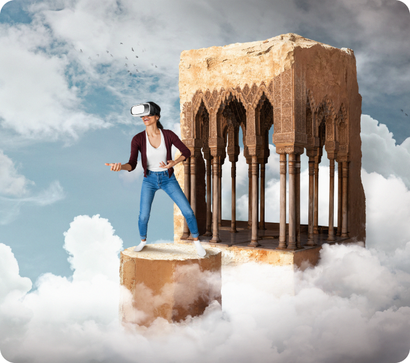

Acrofobia
Experiencia terapéutica

Experimenta situaciones de altura simuladas, como caminar por un puente elevado o estar en un rascacielos. Esto permite un control preciso de las situaciones de exposición y la intensidad de la terapia. Estas tecnologías inmersivas pueden ser una herramienta efectiva en la lucha contra la acrofobia al proporcionar un entorno seguro y controlado para la terapia de exposición, ayudando a las personas a superar sus miedos a las alturas.
2-4 / 35 €